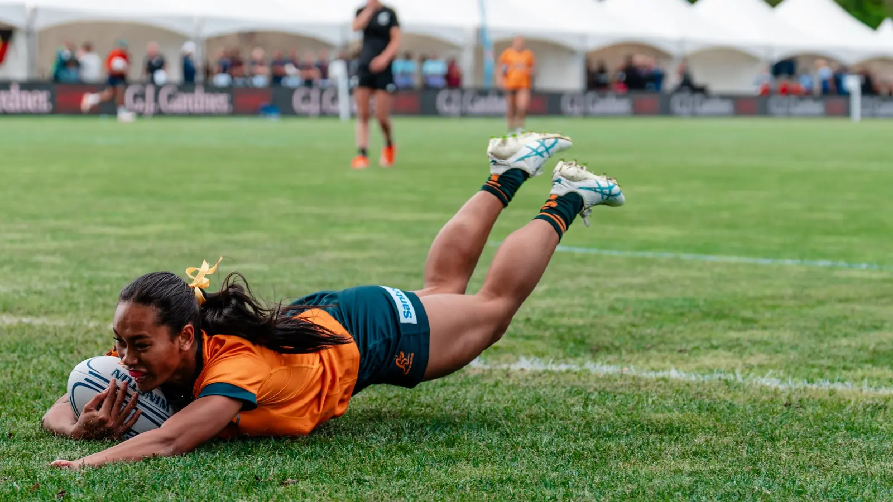

26 to 28 November 2027 · Cape Town
Global Elite 7s 2027: international u23 sevens in Cape Town
An elite international u23 sevens tournament bringing together leading provincial, professional academy, university, club and invitational teams from around the world, outside the regular HSBC SVNS circuit.
Only top elite teams may register. Winner in Cape Town gets free team entry into the Mauritius series in 2028.
What you can expect
Top elite sevens teams competing against the best
- Champagne rugby
- 48 teams: 24 men, 24 women
- u23 age group
- 3-day rugby festival
- Live entertainment
- Beer garden & food vendors
- Cultural experience
- Welcome & closing party
8 days, 7 nights for international teams
Event schedule
- International teams arrive
- Team run & excursions
- Player combine & welcome party
- Team run & excursions
- Global Elite 7s, day 1
- Global Elite 7s, day 2
- Global Elite 7s, day 3
- Breakfast, then departure
Registration
Register as a player or team
Send your details and we will confirm eligibility and next steps.
Questions? +27 76 583 9987
Global Elite 7s questions
When and where is the Global Elite 7s?
26 to 28 November 2027 in Cape Town, South Africa. The venue is still to be confirmed.
Who can enter?
Top elite u23 teams: provincial, professional academy, university, club, invitational and international sides. 24 men's and 24 women's teams.
What does the winner get?
The winner in Cape Town gets free team entry into the Mauritius series in 2028.
How long is the trip for international teams?
8 days and 7 nights, from arrival on 22 November to departure on 29 November 2027.
Rugby guides
Read the guide
- Global Elite 7s 2027 in Cape Town: what teams need to knowGlobal elite 7s in Cape Town, 26 to 28 November 2027: who can enter, the 48-team u23 format, the trip schedule and how to register your team.